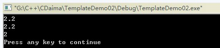

Las plantillas son la herramienta de C++ para admitir polimorfismo parametrizado. El uso de plantillas permite a los usuarios declarar un patrón general para clases o funciones, de modo que ciertos miembros de datos de la clase o los parámetros y valores de retorno de las funciones miembro puedan tomar cualquier tipo.
Una plantilla es una herramienta que parametriza los tipos;
Generalmente hay dos formas: plantillas de función y plantillas de clase;
Las plantillas de función se aplican a funciones que difieren solo en los tipos de los parámetros;
Las plantillas de clase se aplican a clases que difieren solo en los tipos de los miembros de datos y de las funciones miembro.
El propósito de usar plantillas es permitir a los programadores escribir código independiente del tipo. Por ejemplo, si se escribe una función swap para intercambiar dos enteros int, esta función solo puede manejar el tipo int; no puede manejar tipos como double o char. Para intercambiar esos tipos sería necesario escribir otra función swap. El propósito de usar plantillas es hacer que la implementación del programa sea independiente del tipo; por ejemplo, una plantilla de función swap puede realizar intercambios tanto de tipo int como de tipo double. Las plantillas se pueden aplicar a funciones y clases. A continuación se presentan por separado.
Nota:La declaración o definición de una plantilla solo puede realizarse en el ámbito global, en un espacio de nombres o dentro de una clase. Es decir, no puede realizarse en un ámbito local ni dentro de una función; por ejemplo, no se puede declarar o definir una plantilla en la función main.
I. Forma general de la plantilla de función
1. Formato de la plantilla de función:
template <class 形参名，class 形参名，......> 返回类型 函数名(参数列表)
{
函数体
}
Donde template y class son palabras clave; class puede reemplazarse por la palabra clave typename. Aquí typename y class no tienen diferencia. Los parámetros entre paréntesis angulares <> se llaman parámetros formales de plantilla. Los parámetros de plantilla son muy similares a los parámetros de función; los parámetros de plantilla no pueden estar vacíos. Una vez declarada una plantilla de función, se pueden usar los nombres de los parámetros de la plantilla de función para declarar miembros de datos y funciones miembro; es decir, en cualquier lugar de la función donde se puedan usar tipos integrados, se puede usar el nombre del parámetro de plantilla. Los parámetros de plantilla deben inicializarse con los argumentos de plantilla proporcionados al llamar a la plantilla de función. Una vez que el compilador determina el tipo real del argumento de plantilla, se dice que se ha instanciado una instancia de la plantilla de función. Por ejemplo, la forma de la plantilla de función swap es:
template <class T> void swap(T& a, T& b){}，
Cuando se llama a dicha plantilla de función, el tipo T será reemplazado por el tipo en el momento de la llamada, por ejemploswap(a,b)dondea和b是inttipo, en este momento los parámetros formales en la plantilla de función swapTseránintreemplazados, y la plantilla de función se convierte enswap(int &a, int &b). Y cuandoswap(c,d)dondec和d是doubletipo, la plantilla de función será reemplazada porswap(double &a, double &b), logrando así que la implementación de la función sea código independiente del tipo.
2. Nota: para las plantillas de función, no existeh(int,int)una llamada como esta,no se puede especificar el tipo de los parámetros de plantilla en los argumentos de la llamada a la función; para llamar a una plantilla de función se debe usarla deducción de argumentospara llevarla a cabo, es decir, solo se puede realizar h(2,3)una llamada de este tipo, oint a, b; h(a,b)。
¡Los ejemplos de demostración de plantillas de función se tratarán más adelante!
II. Forma general de la plantilla de clase
1. El formato de la plantilla de clase es:
template<class 形参名，class 形参名，…> class 类名
{ ... };
Las plantillas de clase y las plantillas de función comienzan con template seguido de una lista de parámetros de plantilla. Los parámetros de plantilla no pueden estar vacíos. Una vez declarada una plantilla de clase, se pueden usar los nombres de los parámetros de plantilla de la clase para declarar miembros de datos y funciones miembro; es decir, en cualquier lugar de la clase donde se puedan usar tipos integrados, se puede usar el nombre del parámetro de plantilla para declarar. Por ejemplo
template<class T> class A{public: T a; T b; T hy(T c, T &d);};
En la clase A se declaran dos miembros de datos a y b de tipo T, y también se declara una función hy cuyo tipo de retorno es T y cuyos dos parámetros son de tipo T.
2. Creación de objetos de plantillas de clase: por ejemplo, una clase de plantillaA, entonces el método para crear un objeto usando la plantilla de clase esA<int> m;Después de la claseAseguirle con un<>corchete angular y rellenarlo con el tipo correspondiente; de esta manera, en la claseAtodos los lugares donde se usen los parámetros de plantilla seránintreemplazados por él. Cuando la plantilla de clase tiene dos parámetros de plantilla, el método de creación del objeto esA<int, double> m;Los tipos se separan con comas.
3. Para las plantillas de clase, el tipo de los parámetros de plantilla debe especificarse explícitamente entre corchetes angulares después del nombre de la clase. Por ejemploA<2> m;Usar este método para establecer el parámetro de plantilla comointes incorrecto (Error de compilación: error C2079: 'a' uses undefined class 'A<int>'），Para los parámetros de plantilla de clase no existe el problema de deducción de argumentos.Es decir, no se puede tomar un valor entero2y deducirlo comointtipo para pasarlo al parámetro de plantilla. Para establecer el parámetro de plantilla de clase comointtipo, se debe especificar de esta maneraA<int> m。
4. El método para definir funciones miembro fuera de la plantilla de clase es:
template<模板形参列表> 函数返回类型 类名<模板形参名>::函数名(参数列表){函数体}，
Por ejemplo, una clase A con dos parámetros de plantilla T1, T2 contiene una función void h(); la sintaxis para definir dicha función es:
template<class T1,class T2> void A<T1,T2>::h(){}。
Nota:Cuando se definen miembros de la clase fuera de la clase, los parámetros de plantilla después de template deben coincidir con los parámetros de plantilla de la clase que se va a definir.
5. Recordatorio otra vez: la declaración o definición de una plantilla solo puede realizarse en el ámbito global, en un espacio de nombres o dentro de una clase. Es decir, no puede realizarse en un ámbito local ni dentro de una función; por ejemplo, no se puedemaindeclarar o definir una plantilla en la función.
III. Parámetros de plantilla
Hay tres tipos de parámetros de plantilla: parámetros de tipo, parámetros no tipo y parámetros de plantilla.
1. Parámetro de tipo
1.1 Parámetro de plantilla de tipo:Un parámetro de tipo se compone de la palabra clave class o typename seguida de un especificador, comotemplate<class T> void h(T a){}; dondeTes un parámetro de tipo; el nombre del parámetro de tipo lo determina el propio usuario.Un parámetro de plantilla representa un tipo desconocido.Los parámetros de tipo de plantilla pueden usarse como especificadores de tipo en cualquier lugar dentro de la plantilla, exactamente igual que los especificadores de tipos integrados o especificadores de tipos de clase; es decir, pueden usarse para especificar tipos de retorno, declaraciones de variables, etc.
Versión original del autor:1.2、No se pueden especificar dos tipos diferentes para el mismo parámetro de tipo de plantilla, por ejemplotemplate<class T>void h(T a, T b){}，la llamadah(2, 3.2)producirá un error, porque la declaración asigna al mismo parámetro de plantillaTdos tipos diferentes; el primer argumento2establece el parámetro de plantilla T comoint, mientras que el segundo argumento3.2establece el parámetro de plantilla comodouble; los dos tipos de parámetros son inconsistentes y causará un error.(Esto es para plantillas de función)
Versión original del autor: 1.2 es correcto para plantillas de función, pero ignora las plantillas de clase. A continuación se complementará el caso de las plantillas de clase.
Suplemento de 1.2 añadido por mí (para plantillas de clase):Cuando declaramos un objeto de clase como:A<int> a, por ejemplotemplate<class T>T g(T a, T b){}, la llamadaa.g(2, 3.2)no producirá un error en tiempo de compilación, pero habrá una advertencia, porque al declarar el objeto de la clase ya se haTconvertidointal tipo, mientras que el segundo argumento3.2establece el parámetro de plantilla comodouble; en tiempo de ejecución, se realizará una conversión forzada de3.2a3. Cuando declaramos el objeto de la clase como:A<double> a, en este caso no habrá la advertencia mencionada, porque desdeint到doublees una conversión automática de tipo.
Ejemplo de demostración 1:
TemplateDemo.h
Resultado de compilación:
--------------------Configuration: TemplateDemo - Win32 Debug-------------------- Compiling... TemplateDemo.cpp G:\C++\CDaima\TemplateDemo\TemplateDemo.cpp(12) : warning C4244: 'argument' : conversion from 'const double' to 'int', possible loss of data TemplateDemo.obj - 0 error(s), 1 warning(s)
Resultado de ejecución:5
De los ejemplos de prueba anteriores podemos ver que no es tan riguroso como en el original del autor. ¡Esto es solo el resultado de mis propias pruebas! Por favor, con una actitud de buscar la verdad, verifíquenlo ustedes mismos.
2. Parámetros no tipo
2.1 Parámetro de plantilla no tipo:Los parámetros no tipo de una plantilla son parámetros de tipos integrados, comotemplate<class T, int a> class B{};dondeint aes un parámetro de plantilla no tipo.
2.2 Los parámetros no tipo son valores constantes dentro de la definición de la plantilla; es decir, los parámetros no tipo son constantes dentro de la plantilla.
2.3、 Los parámetrosde plantillano tipo solo pueden ser de tipo entero, puntero y referencia; tipos como double, String, String** no están permitidos.Perodouble &，double *，la referencia o puntero a un objeto es correcto.
2.4、 El argumento pasado a un parámetro de plantilla no tipo debe ser una expresión constante, es decir, debe poder evaluarse en tiempo de compilación.
2.5 Nota:Cualquier objeto local, variable local, dirección de objeto local, dirección de variable local no son expresiones constantes y no pueden usarse como argumentos para parámetros de plantilla no tipo. Los tipos de puntero globales, variables globales y objetos globales tampoco son expresiones constantes y no pueden usarse como argumentos para parámetros de plantilla no tipo.
2.6、 ; A<b> m; es decir, conversión de array a puntero.。
2.7 、sizeofEl resultado de una expresión es una expresión constante y también puede usarse como argumento real de un parámetro de plantilla no tipo.
2.8. Cuando el parámetro de la plantilla es de tipo entero, el argumento real al invocar la plantilla debe ser de tipo entero y constante durante la compilación, por ejemplo:template <class T, int a> class A{};Si tenemosint b, entonces A<int, b> m;se producirá un error, porquebno es constante; siconst int b, entonces A<int, b> m; es correcto, porque en este casobes constante.
2.9 、Los parámetros no tipo generalmente no se aplican en plantillas de función., por ejemplo, si tenemos la plantilla de funcióntemplate<class T, int a> void h(T b){}, si se utilizah(2)la llamada producirá un error de que no se puede deducir el argumento para el parámetro no tipo a. Para este tipo de plantilla de función se puede resolver con argumentos de plantilla explícitos, como usar h<int, 3>(2), de modo que el parámetro no tipo a se establece como el entero 3. Los argumentos de plantilla explícitos se presentarán más adelante.
2.10. Conversiones permitidas entre los parámetros formales y los argumentos reales de los parámetros de plantilla no tipo.
1. Se permiten conversiones de array a puntero y de función a puntero. Por ejemplo: template <int *a> class A{}; int b
2. Conversión del modificador const. Por ejemplo: template<const int *a> class A{}; int b; A<&b> m; es decir, la conversión de int * a const int *.
3. Conversión de promoción. Por ejemplo: template<int a> class A{}; const short b=2; A<b> m; es decir, la conversión de promoción de short a int.
4. Conversión de valores enteros. Por ejemplo: template<unsigned int a> class A{}; A<3> m; es decir, la conversión de int a unsigned int.
5. Conversión habitual.
Ejemplo de demostración 1 de parámetros no tipo:
El usuario especifica personalmente el tamaño de la pila e implementa las operaciones relacionadas con la pila.
TemplateDemo.h
TemplateDemo.cpp

Ejemplo de demostración 2 de parámetros no tipo:
TemplateDemo01.h
TemplateDemo01.cpp
Resultado de la ejecución:-1
TemplateDemo01.cpp
Resultado de la ejecución:1
TemplateDemo01.h
TempalteDemo01.cpp
Ejemplo de demostración 3 de parámetros no tipo:
TemplateDemo02.cpp
Resultado de la ejecución:

cout<<max<int>(2.1,2.2)<<endl; //显示指定的模板参数，会将函数函数直接转换为int。
Esta declaración producirá una advertencia:
--------------------Configuration: TemplateDemo02 - Win32 Debug-------------------- Compiling... TemplateDemo02.cpp G:\C++\CDaima\TemplateDemo02\TemplateDemo02.cpp(11) : warning C4244: 'argument' : conversion from 'const double' to 'const int', possible loss of data G:\C++\CDaima\TemplateDemo02\TemplateDemo02.cpp(11) : warning C4244: 'argument' : conversion from 'const double' to 'const int', possible loss of data TemplateDemo02.obj - 0 error(s), 2 warning(s)
IV. Parámetros de tipo por defecto en plantillas de clase
1、Se pueden proporcionar valores predeterminados para los parámetros de tipo de las plantillas de clase, pero no se pueden proporcionar valores predeterminados para los parámetros de tipo de las plantillas de función.Tanto las plantillas de función como las plantillas de clase pueden proporcionar valores predeterminados para los parámetros no tipo de la plantilla.
2. La forma de los valores predeterminados de los parámetros de tipo de una plantilla de clase es:template<class T1, class T2=int> class A{};para el segundo parámetro de tipo de plantillaT2proporcionarintun valor predeterminado de tipo.
3. Los valores predeterminados de los parámetros de tipo de una plantilla de clase son como los parámetros predeterminados de una función: si hay varios parámetros de tipo, todos los parámetros de plantilla posteriores al primer parámetro que ha establecido un valor predeterminado también deben establecer un valor predeterminado, por ejemplotemplate<class T1=int, class T2>class A{};es incorrecto, porqueT1se dio un valor predeterminado, peroT2no se estableció.
4. Al definir miembros de la clase fuera de la plantilla de clase,templatela lista de parámetros después de template debe omitir los tipos de parámetros predeterminados. Por ejemplotemplate<class T1, class T2=int> class A{public: void h();}; el método de definición estemplate<class T1,class T2> void A<T1,T2>::h(){}。
Definir los parámetros de tipo de la plantilla de clase:
Ejemplo de demostración 1:
TemplateDemo.h
TemplateDemo.cpp
Resultado de la ejecución:5
Ejemplo 1 de parámetros de tipo por defecto en plantillas de clase:
TemplateDemo03.h
TemplateDemo03.cpp
Resultado de la ejecución:2
Al definir miembros de la clase fuera de la plantilla de clase, la lista de parámetros después de template debe omitir los tipos de parámetros predeterminados. Si no se omiten, no se producirá un error de compilación, sino una advertencia:
--------------------Configuration: TemplateDemo03 - Win32 Debug-------------------- Compiling... TemplateDemo03.cpp g:\c++\cdaima\templatedemo03\templatedemo03.h(12) : warning C4519: default template arguments are only allowed on a class template; ignored TemplateDemo03.obj - 0 error(s), 1 warning(s)
Autor original:Los valores predeterminados de los parámetros de tipo de una plantilla de clase son iguales a los parámetros predeterminados de una función: si hay varios parámetros de tipo, todos los parámetros de plantilla posteriores al primer parámetro que ha establecido un valor predeterminado deben establecer un valor predeterminado, por ejemplotemplate<class T1=int, class T2>class A{};es incorrecto, porqueT1se dio un valor predeterminado, peroT2no se estableció.
Ejemplo 2 de parámetros de tipo por defecto en plantillas de clase:
TemplateDemo03.h
TemplateDemo03.cpp
Resultado de la ejecución:9
TemplateDemo03.h
TemplateDemo03.cpp
Error de compilación:
--------------------Configuration: TemplateDemo03 - Win32 Debug-------------------- Compiling... TemplateDemo03.cpp g:\c++\cdaima\templatedemo03\templatedemo03.h(12) : error C2244: 'CeilDemo<T1,T2,T3>::ceil' : unable to resolve function overload g:\c++\cdaima\templatedemo03\templatedemo03.cpp(6) : error C2065: 'cd' : undeclared identifier g:\c++\cdaima\templatedemo03\templatedemo03.cpp(6) : error C2228: left of '.ceil' must have class/struct/union type Error executing cl.exe. TemplateDemo03.obj - 3 error(s), 0 warning(s)
Del ejemplo anterior podemos ver que cuando intentamos definir T2 y T3 como tipo double, aparecerá un error (T1 está definido por defecto como tipo int). Entonces, si siguiéramos lo que dice el autor y estableciéramos T2 y T3 también con el valor predeterminado double, ¿seguiría apareciendo el error? Veamos el siguiente ejemplo:
Ejemplo 4 de parámetros de tipo por defecto en plantillas de clase:
TemplateDemo03.h
TemplateDemo03.cpp
Error de compilación:
--------------------Configuration: TemplateDemo03 - Win32 Debug-------------------- Compiling... TemplateDemo03.cpp g:\c++\cdaima\templatedemo03\templatedemo03.h(12) : error C2244: 'CeilDemo<T1,T2,T3>::ceil' : unable to resolve function overload g:\c++\cdaima\templatedemo03\templatedemo03.cpp(6) : error C2065: 'cd' : undeclared identifier g:\c++\cdaima\templatedemo03\templatedemo03.cpp(6) : error C2228: left of '.ceil' must have class/struct/union type Error executing cl.exe. TemplateDemo03.obj - 3 error(s), 0 warning(s)
Del resultado podemos ver que es el mismo error que en el ejemplo anterior. De los ejemplos podemos resumir lo siguiente: si una plantilla de clase tiene varios parámetros de tipo, al usar valores predeterminados para los parámetros de tipo, estos deben colocarse lo más al final posible de la lista de parámetros, y los tipos de parámetros predeterminados deben ser los mismos. Si desde el primer parámetro se establece un valor predeterminado, todos los parámetros de plantilla posteriores deben establecer un valor predeterminado del mismo tipo que el primer parámetro.(Declaración: también soy nuevo en C++, lo anterior son solo algunas dudas que planteo al autor original después de las demostraciones con ejemplos. Puede que mis ejemplos tengan deficiencias. Espero que los expertos no escatimen en enseñarme, para mejorar juntos este blog y proporcionar una plataforma de aprendizaje para los novatos como yo).
A continuación, verifiquemos que "no se pueden proporcionar valores predeterminados para los parámetros de tipo de las plantillas de función":
Ejemplo 5 de parámetros de tipo por defecto en plantillas de clase:
TemplateDemo04.cpp
Error de compilación:
--------------------Configuration: TemplateDemo04 - Win32 Debug-------------------- Compiling... TemplateDemo04.cpp g:\c++\cdaima\templatedemo04\templatedemo04.cpp(4) : error C2062: type 'int' unexpected Error executing cl.exe. TemplateDemo04.obj - 1 error(s), 0 warning(s)
TemplateDemo.cpp después del cambio
TemplateDemo.cpp
Resultado de la ejecución:261.1
El ejemplo de demostración del autor original es el siguiente:
Ejemplo de parámetros no tipo en plantillas de clase
Dirección original:
https://www.cnblogs.com/gw811/archive/2012/10/25/2738929.html
http://www.cnblogs.com/gw811/archive/2012/10/25/2736224.html